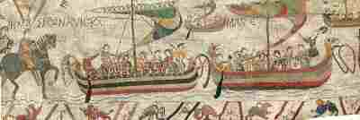

Le retour d'Angleterre
Return from England
Dialecte de Cornouaille
|
Puis, dans la première édition du Barzhaz en 1839. L'édition de 1845 (tome I, p.233) cite comme informateur Katel Road (Catherine Rouat (1779 - 1860), épouse René-Pierre Richard ) de Nizon-bourg. Anaïk Le Breton a été oubliée par Mme de La Villemarqué lorsqu'elle a dressé sa première liste de chanteurs, la Table B , la seule qui fut prête à temps pour que son fils pût s'en servir pour préparer l'édition de 1845. Il a suppléé à cet oubli en se fiant à sa mémoire, sans doute moins fidèle que celle de sa mère. |
 |
Then, in the first edition of the Barzhaz in 1839. The 1845 edition names the informant Katel Road (Catherine Rouat (1779 - 1860), wife of René-Pierre Richard ) from Nizon town. Anaïk Le Breton was forgotten by Mme de La Villemarqué when she set up her first list of singers, Table B , the only list which her son could refer to when preparing the 1845 edition of the Barzhaz. He made up for this omission by relying on his own memory which was apparently less reliable than his mother's. |
Ton 1
(Mode dorien, noté la mineur dans le Barzhaz, Arrt: Chr. Souchon)
Ton 2
Version arrangée par Bourgault-Ducoudray(1848-1902): Do mineur
| Français | Français | English |
|---|---|---|
|
Et celui de Plouaré, Il y a des jeunes gentilshommes Qui lèvent une armée Et c'est le fils de la Duchesse, Qui conduira leurs rangs. On voit de toute la Bretagne Accourir bien des gens. 2. Il s'agit de partir en guerre Outre mer chez l'Anglais. Et moi, c'est mon fils, Silvestik. Que l'on va m'enlever. Or c'est mon seul fils, Silvestik, D'autre enfant je n'ai point. Et voilà qu'il dit qu'il veut suivre Les chevaliers au loin. 3. Une nuit que je suis couchée Et cherche le sommeil, J'entends les filles de Kerlaz Chanter son chant de deuil. Je me dresse sur mon séant, Aussitôt, dans mon lit, - Seigneur! Où donc est maintenant, Mon cher fils Silvestik? 4. A plus de trois cents lieues d'ici Tu peux être à présent, Ou bien, en pâture aux poissons, Jeté dans l'océan. Eusses-tu voulu demeurer Auprès de tes parents, Tu serais, bien sûr, fiancé, Fiancé maintenant. 5. Tu serais fiancé, bien sûr, Ou marié, pourquoi pas? A la plus belle du canton, Manna de Pouldergat. A Mannaïk, ta bien-aimée, Et nous t'entourerions Avec tes enfants dont les cris Empliraient la maison. 6. Je sais une colombe grise Nichant près de chez moi. Dans un rocher de la colline. Elle couve, je crois. Je m'en vais écrire une lettre Qu'à son cou l'on mettra Ainsi que mon ruban de noces Et mon fils reviendra. 7. - Prends ton vol, petite colombe, Déploie tes ailes, viens! Dis-moi donc si tu volerais, Tu volerais au loin. Si tu pourrais voler bien loin Par-delà l'océan, Que je puisse savoir enfin Si mon fils est vivant. 8. Pourrais-tu voler jusqu'aux lieux Où l'armée tient son camp Et me rapporter des nouvelles Du malheureux enfant? - C'est la colombe de ma mère Qui chantait dans le bois. Vois, au raz des flots elle vole, Elle approche du mât. 9. - Bonheur à vous, O Silvestik, Oui, bonheur, écoutez: Voici la lettre que l'on m'a Chargé de vous porter. - Que trois ans et un jour se passent, Je serai de retour!. Près de mon père et de ma mère Dans trois ans et un jour! - 10. Voilà que les deux ans s'écoulent Et les trois ans aussi. - Je ne te verrai, Silvestik, Plus dans ce monde-ci. Puissé-je un jour trouver tes restes Charriés par l'océan, Recueillir ces objets funestes, Les baiser tendrement! - 11. Elle en était encore à dire Ces paroles de deuil, Lorsqu'un bâtiment de Bretagne Vint heurter un écueil Où la nef du pays s'écrase. Comme eût fait un fétu. Et ce vaisseau n'a plus de rames, Et ses mats sont rompus. 12. On le trouve empli de cadavres Dont on ne sait, je crois, Quand ils avaient foulé la terre Pour la dernière fois. Et Silvestik était du nombre. Ses parents malheureux N'avaient pu lui rendre l'hommage De lui fermer les yeux. Traduction Christian Souchon (c) 2008 |
A rassemblé naguère Non loin de Plouaret Des chevaliers nombreux: 2. Au pays des Saxons Ils vont faire la guerre, Et mon fils Silvestik Va partir avec eux. 3. Une nuit j'entendis Chanter dans la vallée La chanson de mon fils La chanson de Kerlaz. Et moi de me lever, En sursaut réveillée, - Seigneur Dieu! Pauvre enfant, Ne reviendras tu pas? 4. Tu fuis au loin, tu fuis! Avec toi fuit ma joie, Hélas, je reste seule, Et je pleure céans; Peut-être es-tu blessé, Peut-être es-tu la proie, De quelque monstre affreux, Au fond de l'océan. 5. Comme moi, tous les jours, Ta douce Manna pleure: Vous seriez fiancés! Chaque soir, au retour, Elle t'embrasserait, Au seuil de la demeure, Et tes petits enfants Sauteraient alentour. 6. Mon pigeon veut couver: Demain j'irai le prendre Dans le creux du rocher, Dès que le jour luira. Et lui lier au col Une lettre bien tendre Avec mon ruban d'or, - Et mon fils reviendra! 7. - Lève-toi, lève-toi, Ma blanche colombelle! Dis-moi, volerais-tu Jusqu'à mon pauvre enfant? L'air est doux, le ciel pur, La mer est calme et belle, Dis, volerais-tu voir S'il est encor vivant? 8. - Mon pigeon! mon pigeon! Dieu! ce pourrait-il être? Lui, qui rase les flots! C'est lui! C'est lui! - Bonjour 9. Et bonheur, Silvestik, Et prenez cette lettre. - Dans trois ans, bel oiseau, Je serai de retour! - 10. Un an passa, deux ans, Trois ans, point de message! - Je ne te verrai plus, Adieu, mon pauvre enfant! J'irai chercher tes os Tout le long du rivage, J'irai les recueillir, Les baiser en pleurant! - 11. Cependant un vaisseau Parti pour la conquête, Egaré sur les mers, A-demi fracassé, Sans rames et sans mâts Battu par la tempête, Vers les récifs du bord Venait d'être poussé. 12. Depuis combien de temps N'avait-il vu la terre?, Il était plein de morts, - Silvestik avec eux. Mais sa douce Manna, Son père, ni sa mère, Hélas, ni nul ami N'avait fermé ses yeux. Traduction La Villemarqué 1839 |
Pouldergat and Plouaré, Young gentlemen that are levying Troops to join an army And go to war under the Son Of the Duchess who did, Gather many people from all The parts of Brittany. 2. They go to war, and overseas Fight against the Saxon. They want my son, my Silvestik, Also to follow on. Silvestik is my only son. Except him, I've no child! And he is leaving with the host Among the Breton knights. 3. One evening I lay in my bed, Awake and heard a song: It was a dirge that Kerlaz girls Were crying on my son. And I sat up immediately, Hearing it, in my bed. - O my God! My dear Silvestik Where are you now? I said. 4. Maybe you are three hundred miles Or more away from home. Or were you thrown into the sea For the fish to feed on? If you had agreed to stay with Your father, your mother You were betrothed by now And to the finest girl. 5. Yes, you were betrothed by now And to the finest lass In the county you were married: Mannaïk of Pouldergat. To your sweetheart, Manna and you Were now here with us all And with joyous babies' crying Would resound the old hall. 6. There is by my door a grey dove On the hill, in the wood Who in the hollow of a rock Is sitting with her brood. And I shall tie around her neck A letter to be borne Along with my wedding ribbon That my son may come home. 7. - Come on, come on my little dove, You must be on the wing! Tell me if you would far away, Far away be flying, Be flying away for my sake Across the sea and strive To let me know if Silvestik Is there and still alive? 8. Would you fly as far as the camp Where the host took their stand. Would you fly and bring me tidings Of my child from that land? - Here is my dear mother's grey dove That would sing in the grove. I see how she flies round the mast And to the waves so close. 9. - Good luck to you, Sir Silvestik, Good luck to you! And see: Here I have a letter for you Which I have brought with me: - In three years and a day I shall Be relieved from my pain! In three years and a day I shall Be in my house again! - 10. The first two years are gone by now And also the third year. - Good bye, Silvestik, I fear I Won't see you anymore! If I could find your bones washed up By the coming in sea How I would collect them all, Kiss them devotedly! - 11. Hardly had she finished speaking When she saw, far away, A Breton vessel hit a reef On the shore. It was stray. A ship from our country that was Shattered from stern to bow, With all the oars on her missing Her mast across the prow. 12. And she was full of dead people And nobody could tell, How long they had thus been roving, Driven on by the swell, And Silvestik was among them Whose parents never could Close his eyes for his last slumber As a loving friend would. Transl Christian Souchon (c) 2008 |
Vers les textes bretons
To the Breton texts

|
Résumé
Silvestik de Kerlaz a suivi une expédition en Angleterre que La Villemarqué suppose être celle de Guillaume le Conquérant en 1066. Sa mère lui envoie son ruban de noces pour qu'il rentre au pays, mais le bateau fait naufrage et ne rapporte que son cadavre. Le ruban tricolore appelé "ruban de noces" était, selon La Villemarqué, passé à la ceinture de la mariée le jour de ses notes par le principal de ses amoureux éconduits ("diskaret"). La caution d'Augustin Thierry Dans l'"argument", La Villemarqué affirme que ce chant a trait à l'expédition normande de 1066 et justifie son hypothèse par le seul fait qu'Augustin Thierry intégra cette pièce dans la 5ème édition de son "Histoire de la conquête de l'Angleterre", en 1838, en la présentant comme un "chant composé en Basse-Bretagne sur le départ d'un jeune Breton auxiliaire des Normands et sur son naufrage au retour. " Dans une note Thierry indique qu'il doit ce " curieux morceau de poésie à l'obligeance de M. Théodore de La Villemarqué et qu'il est destiné à faire partie d'un recueil appelé Barzaz-Breiz, dont la publication aura lieu prochainement. " Cette imposante référence fait surtout la preuve des talents de persuasion du jeune homme, mais on est en droit, en l'occurrence, de rester sceptique à propos de cette datation (il n'est pas question dans ce chant de Guillaume ni de la Normandie, ...) On a dit, à propos du Vin des Gaulois , ce que A.W. Schlegel pensait de la crédulité d'Augustin Thierry. Henri d'Arbois de Jubainville Luzel collecta deux versions de ce chant dans le Trégor, à Duault et à Plouaret. Dans une note il invite le lecteur à se reporter à un article d' Henri d'Arbois de Jubainville (1827 - 1910), publié dans le numéro de mars 1868 de la "Revue Archéologique". Cet éminent paléographe lorrain, diplômé, comme La Villemarqué, de l'Ecole des Chartes en 1851, était Directeur des archives départementales de l'Aube. En 1882 il devint titulaire, au Collège de France d'une chaire de langue et littérature celtiques et en 1883 il est élu à l'Académie des inscriptions et belles-lettres (La Villemarqué l'avait été 25 ans plus tôt). Il est l'auteur de plusieurs ouvrages importants qui ont trait à la littérature celtique. L'article en question vient appuyer les accusations de fraude formulées par Luzel en 1867 lors d'un congrès de l'Association bretonne à Saint-Brieuc et alimenter la polémique autour de l'authenticité de certains chants du Barzhaz Breizh. Augustin Thierry, victime d'un fraudeur En introduction Jubainville cite le cas d'un professeur de la Faculté des lettres de Caen qui avait avoué en 1866 être l'auteur d'une chanson historique normande du 15ème siècle qu'il avait publiée en 1833 et ajoute: " Les auteurs de [ce genre de] documents n’ont pas tous la [même] franchise ". Puis il indique que l'Histoire de la Conquête de l'Angleterre par Augustin Thierry se réfère à une pièce dont il se propose d'établir qu'elle est fabriquée, étant observé qu'il " est médiocrement utile de savoir si c'est par celui-ci ou par celui-là ". (Luzel quant à lui ne s'embarrasse pas de tels scrupules et incrimine clairement le Barzhaz Breizh et son auteur). Après avoir reproduit ledit texte et sa traduction (par La Villemarqué!), il expose: "La date de l'événement auquel ce document se rapporte, est fixée par les premiers vers. Il y est question du fils d'une duchesse qui alla faire la guerre au pays des Saxons. Ce fils d'une duchesse est Alain Fergent, fils d'Eudes, duc de Bretagne, et d'Havoise, femme de ce prince. Alain, avec Brian son frère, commanda un corps de Bretons qui se joignit, en 1066, à l'armée de Guillaume le Bâtard, duc de Normandie, et qui prit part à la conquête de l'Angleterre. Si l'on croit à l'authenticité de cette pièce, il faut admettre qu'elle a été chantée pour la première fois vers 1066 ou vers la fin du 11ème siècle, et que depuis celle époque elle n'a cessé de se chanter telle à peu près qu'elle avait été composée, sauf les changements de forme rendus nécessaires par les modifications successives de !a langue : car cette pièce telle qu'on nous la donne est écrite en breton moderne, c'est-à-dire en une langue toute différente du breton qui se parlait au 11ème siècle. La conservation d'un morceau de poésie historique dans la tradition populaire malgré les transformations de la langue, pendant plus de sept siècles, nous paraît, a priori, chose difficile. Un chant similaire collecté par F-M. Luzel Mais il y a un fait qui tranche la question: Un savant breton, M. Luzel, recueille depuis plus de vingt ans des matériaux pour un recueil de chants populaires armoricains. Il n'a nulle part, malgré ses recherches, entendu chanter par les chanteurs bretons le Retour d’Angleterre, pire, il n'a rencontré personne qui l'ait entendu chanter. M. Le Men, archiviste du département du Finistère, associé depuis quelques années à ses recherches, n'a pas été plus heureux. Cependant leurs efforts n'ont pas été sans résultats. Le héros de la chanson dont M. Aug. Thierry paraît avoir été le premier éditeur s'appelle Silvestik. Silvestrik (le même nom à une lettre près) est le héros d'une complainte populaire qui se chante réellement en Bretagne et dont voici deux versions :" (suivent les deux versions pour lesquelles Maurice Duhamel a trouvé 4 mélodies): Jubainville affirme que "Il est évident que la chanson de Silvestrik est le thème primitif où l’auteur du Retour d'Angleterre a puisé l'idée fondamentale de son petit poème, en même temps que de nombreux détails. La méthode qu'il a suivie se reconnaît facilement. Manipulation du contenu historique du chant Pour lui assurer un bon accueil dans le monde savant à l'époque où elle fut pour la première fois publiée, on crut nécessaire de la corriger à ce double point de vue. Elle rappelait un vulgaire et obscur enrôlement militaire du 17ème ou du 18ème siècle : Silvestrik était le type modeste du jeune paysan breton racolé par un sergent sous Louis XI V ou sous Louis XV. La scène fut reportée au moyen âge et au moment où Guillaume le Conquérant se préparait à envahir le royaume des Saxons : par ce moyen la petite complainte bretonne devint un monument historique. Le changement d'époque nécessita plusieurs modifications de détail : ainsi le capitaine fut remplacé par des gentilshommes ; et, comme M. Aug. Thierry ne dit nulle part que le duc de Normandie donnât à ses soldats des primes d'engagement, on supprima le passage où le père propose de rembourser celle que son fils a reçue. "Retouches" littéraires Les corrections littéraires sont plus importantes encore: Pour rendre la plainte plus touchante, c'est une mère, et non un père, que fait parler l’auteur du Retour d’Angleterre. [...] le Retour d'Angleterre étant destiné non aux paysans, mais aux lecteurs des ouvrages de M. Aug. Thierry, on ne peut nier que l'auteur de ce pastiche n'ait été bien inspiré quand il a fait ce changement. Dans la chanson primitive, le messager qui va chercher des nouvelles de Silveslrik est un petit oiseau . Pour donner plus de vie au tableau, l'auteur du Retour d'Angleterre précise davantage : c'est, nous dit-il, une colombe blanche qui va trouver le soldat absent de la part de sa famille. Cet oiseau avait son nid dans le trou d'un mur vulgaire, le Retour d'Angleterre le loge noblement dans le creux d'un rocher . Silveslrik revenait prosaïquement dans sa famille après avoir servi son temps, et, pour mettre le comble à la joie de son père, lui faisait cadeau d'une pipe [...] Encore ici la nature était prise sur le fait. Mais le Retour d'Angleterre, œuvre d'une littérature plus savante et plus raffinée, ne pouvait se terminer aussi platement. Voilà pourquoi le poète finit d'une manière si lugubre; telle est la raison d'être de ce vaisseau plein de morts, parmi lesquels on compte le jeune guerrier breton. On ne peut s'empêcher d'être ému en pensant à la mère qui attendait son fils et qui reçoit dans ses bras un cadavre." Sans doute pour ne pas s'exposer à un procès en diffamation, Jubainville prend la précaution de terminer son réquisitoire par un compliment: "L'auteur du Retour d'Angleterre, quel qu'il soit, est un homme de talent ." "La parole est à la défense" Cette démonstration, en particulier son volet historique, est effectivement fort convaincante. Ceci dit, rien ne prouve que la version cornouaillaise (si l'on en juge par le dialecte et par les noms de lieux cités dans le premier vers: Pouldergat, Ploaré) du chant que donne La Villemarqué soit basée sur une tradition orale identique à celle collectée par Luzel dans le Trégor, ni que toutes les suppressions, adjonctions et substitutions incriminées aient effectivement eu lieu. Certaines ont pu être motivées, sans intention malhonnête aucune, par la nécessité de supprimer des illogismes du genre de celui que Luzel lui-même relève - mais non Jubainville! - dans son texte (le marin qui se retrouve à Metz!) Autre bizarrerie du texte de Luzel: le père qui est pourtant pressé de revoir son fils, semble accorder à l'oiseau un délai d'un an, le temps d'élever ses oisillons, avant d'aller porter sa lettre: "Mar deu d'am evn da zevel, da ober bloaves-mad," (si mon oiseau parvient à faire éclore [ses oeufs], à 'faire bonne année'). Cela ressemble fort à une citation mal à propos de Jeanne la Sorcière , dont il a été question au sujet du chant "Héloise et Abélard" , dans lequel on trouve le vers: "Mar deu ma loenidigoù da ober bloavez-mat" (Si mes petites bêtes arrivent à faire une bonne année). On ne saurait faire grief à La Villemarqué d'avoir éventuellement supprimé ce curieux détail. On peut en outre être sceptique quant à la réalité des griefs d'ordre littéraire formulés par d'Arbois de Jubainville. Savoir si un mur, un oiseau et un père auraient moins touché la sensibilité d'un public lettré, qu'un rocher, une colombe blanche et une mère, voilà une question bien difficile à trancher! De la sentimentalité exubérante il y en a surtout dans la "note" qui suit le chant, à propos de l'usage ancien, selon La Villemarqué, du "ruban de noce" et du rôle de l'oiseau qui sert de messager dans les chansons. Dans l'édition de 1867, il évoque à ce sujet un chant flamand tiré de l'ouvrage d'Edmond de Coussemaker, les "Chants populaires des Flamands de France", publiés en 1856, pour contribuer à l'exécution du décret du 16 septembre 1852 visant à "élever à la gloire nationale... un monument [qui] comprendra toutes les poésies populaires et traditionnelles de la France". Il s'agit du chant 48, Le magistrat Lillois veut y voir un souvenir ou une imitation d'un poème scandinave (Goedroen) ! Comme on l'a vu à propos des "Séries" , c'est de la Villemarqué lui-même qu'il a contracté cette curieuse maladie du vieillissement. La comparaison avec les deux variantes conservées dans le manuscrit de Keransquer montre qu'elles ont inspiré les strophes 6 à 12 du poème de La Villemarqué et qu'elles comportent bien la fin tragique dont d'Arbois de Jubainville pensait qu'elle était un artifice littéraire. La strophe 3 relative au chant des jeunes filles n'est pas non plus une invention du Barde, puisqu'on la retrouve dans les deux versions notées par Luzel, mais non dans le manuscrit qui n'est donc pas la source unique de La Villemarqué. Il en est de même des deux premières strophes qui relatent l'enrôlement de Silvestre. En définitive, La Villemarqué n'a inventé ni la mère, ni le ruban de noce, ni la colombe blanche, ni les rochers, comme Jubainville lui en fait le reproche. Ses seuls ajouts fautifs, outre la fiancée, semblent être le fils de la Duchesse et l'Angleterre. |
Résumé
Silvestik of Kerlaz took part in a raid on England which La Villemarqué supposes to be William the Conqueror's venture in 1066. His mother sends him her wedding ribbon to urge him to come back home, but it is his corpse that the wrecked ship carries back. The three-coloured ribbon called "wedding ribbon" was put round the bride's waist on her wadding by her "most important", discarded ("diskaret) suitor. Augustin Thierry's guarantee In the "argument" La Villemarqué justifies his hypothesis of a song referring to the Norman raid on England in 1066, solely by the fact that this ballad was included by the historian Augustin Thierry in the 5th edition of his "History of the Conquest of England", in 1838, presenting it as " a ballad from Low Brittany on a young Breton who was an auxiliary to the Norman forces and was shipwrecked when sailing back home. " He adds in a note: " this curious piece of poetry was contributed by Mr Theodore de la Villemarqué and will be included into a collection titled "Barzaz Breiz" to come out soon. " This imposing patronage is above all a proof for young La Villemarqué's know how in the matter of persuasion. One may however, in the present case, be sceptical as to this dating: Why are neither William nor Normandy named in the song?... For what A.W. Schlegel wrote about Augustin Thierry's gullibility please refer to The Wine of the Gauls . Henri d'Arbois de Jubainville Luzel collected two versions of this song in the Trégor towns Duault and Plouaret. In a footnote he prompts the reader to refer to an article that Henri d'Arbois de Jubainville (1827 - 1910), published in the March 1868 copy of the "Revue Archéologique". This prominent palaeographer, a native from Lorraine, was, like La Villemarqué, an alumnus of the Ecole des Chartes whose diploma was awarded to him in 1851. He was, at first, Head of the Archives of the Département Aude. In 1882 he was given tenure at the Collège de France where a chair of Celtic languages and literatures was created for him and in 1883, 25 years after La Villemarqué, he was elected to one of the five academies of the Institut de France, the Académie des Inscriptions et Belles-Lettres (devoted to the humanities). He wrote several important works with bearing on Celtic literature. The article referred to corroborates the accusation of forgery brought against La Villemarqué by Luzel in 1867 on a congress of the Saint Brieux Breton Society and provides arguments in his favour in the controversy about the authenticity of some songs in the Barzhaz Breizh. Augustin Thierry deceived by a forger In the introduction Jubainville mentions a professor of the faculty of Arts of Caen who had admitted in 1866 that he was the author of the 15th century Norman song he had published in 1833. He adds " All authors of [this kind of] documents are not so honest ". Then he states that the "History of the Conquest of England" by Augustin Thierry quotes a ballad which he shall prove to be a forgery, whereby " it is of no importance to know who is liable for it ". ( Luzel does by no means scruple to clearly name the Barzhaz Breizh and his author). He first quotes, in full, the incriminated text and its translation (by La Villemarqué!). Then he explains: "The date of the event referred to in this song is given in the first lines. The ballad mentions the son of a duchess who goes off to the war against the Saxons. He must be Alan Fergent, son to Eudes, the Duke of Brittany and his wife Havoise. With his brother Brian he commanded a corps of Bretons who joined in 1066 the forces of William the Bastard, Duke of Normandy, when he invaded England. If this ballad is authentic, it must have been sung for the first time in 1066 or around the end of the 11th century and since then uninterruptedly in about the same shape as in the beginning, but for changes in the language in the course of centuries, as it is presented to us in modern Breton, thoroughly different from the 11th century idiom. The preservation by oral tradition of a piece of historical poetry over seven centuries or more, in spite of the changes occurred in the language, appears at first sight, highly improbable. A similar song collected by F-M. Luzel Here is a fact that definitely settles the problem: A Breton scientist, M. Luzel, has been collecting for over twenty years materials for an Armorican folk song collection. Nowhere, in spite of his patient researches, did he hear the "Return from England" sung by Breton singers or encounter anybody who had. M. Le Men, archivist of the Département Finistère (investigated by La Villemarqué) who assists him in his work also always went home empty-handed. And yet their exertions were not fruitless. The protagonist of the song that apparently was first published by M. Aug. Thierry is named Silvestik. Now, Silvestrik (the same name with "r") is the hero in a folk ballad that is really circulated in Brittany, for which they found two versions:" (follow the two versions for which Maurice Duhamel collected 4 melodies): Jubainville maintains that "It is evident that the song 'Silvestrik' provided the author of the "Return from England" with both the original subject and lots of details for his little poem . The method he used is easily detectable. Falsification of the historical contents of the song To make sure that this song would meet the requirements of the scientists when it was first published, its promoter deemed it prudent to amend it in these two aspects. The song reminded of trivial enlistment for some obscure 17th or 18th century campaign and Silvestrik was the typical Breton lad touted for by a recruiting officer in the reign of Louis XIV or Louis XV. The scene was set back to the Middle Ages, when William the Conqueror was preparing to invade the kingdom of the Saxons, thus making of the little Breton ballad a historical monument. The change in the time when the event occurred made many petty changes necessary. For instance, the captain was replaced by noblemen ; and, since M. Aug. Thierry nowhere says that the Duke of Normandy gave his soldiers enlistment allowances, the passage where the father offers to redeem his son was removed . "Touching up" the literary content of the song The literary alterations are still profounder: To make the lament more moving, it is a mother, not a father, who is staged in the 'Return from England' [...] which is not intended for country folks, but for the readers of M. Aug. Thierry's books and no one can deny that the author of this pastiche was well-advised to do so. In the initial song, the messenger who brings news from Silvestrik is a little bird . To make the picture livelier the author of the 'Return from England' is more accurate: it is a white dove that flies all the way to the faraway soldier on behalf of his family. This bird was nesting in a trivial hole in a wall . Now its home becomes statelier: a hole in a rock . Silvestrik prosaically came home when he had served his time and, to increase his father's satisfaction, he presented him with his pipe [...] Here again the scene was naively natural. But the 'Return from England', ranking among a more sophisticated and refined literature, could not be contented with so trivial an ending. That is the reason why the poem ends in that macabre way. That is the reason for this vessel full of dead bodies and why the young Breton warrior was found among them. Who could refrain from crying on this hapless mother who awaited her son and is now embracing a lifeless body?" Probably to prevent an action for libel, Jubainville chooses to conclude his philippic with a compliment: "The author of 'The Return from England', whoever he may be, is highly talented." "The defence may now speak" This demonstration, especially the historical part of it, is very convincing indeed. However there is no proof that the version in Cornouaille dialect, quoting in the first line Cornouaille place names (Pouldergat, Ploaré, on the Douarnenez Bay shore), published by La Villemarqué, is based on the same oral tradition as Luzel's versions of the song that were collected in a different area, Trégor. There is consequently no actual proof for the alleged offending violations of the raw material by adjunction, suppression or substitution. Besides, some changes could have been requested, independently of any dishonest scheme, by inconsistencies in the original texts. Luzel himself - but mind, not Jubainville! - points out one of them: in one version the sailor goes on board a ship that takes him to... Metz in Lorraine! Another oddity in the Luzel lyrics: the father seems to allow the bird one year for raising its chicks before it delivers his letter to the son he longs to see again: "Mar deu d'am evn da zevel, da ober bloaves-mad," (if my bird manages to hatch [its eggs], to spend a good year) It sounds like an uncalled-for reminiscence from the song Joan the Witch , mentioned in connection with "Heloise and Abélard" , where a similar line is found: "Mar deu ma loenidigoù da ober bloavez-mat" (if my little serpents may spend a good year) If La Villemarqué removed this curious detail, he cannot be blamed for it. On the other hand, the literary part of the bill of indictment brought in by d'Arbois de Jubainville is not unassailable. Who knows if a wall, a simple bird and a father would have been less appealing, in the eyes of an educated audience, than a rock, a white dove and a mother? The question is difficult to decide! But the "note" following the song decidedly overflows with sentimentality, when La Villemarqué evokes the ancient custom of the "wedding ribbon" and the part played in folk songs by birds appointed as messengers . In the 1867 edition of the Barzhaz, he refers to the song N° 48 in the collection of "Flemish Folk songs from France" published in 1856 by Edmond de Coussemaker, in fulfilment of the Decree of 16th September 1856 for the "erection of a monument to the glory of the Nation compassing all poems and songs of the French lore": The Lille magistrate recognizes in it a reminiscence or an imitation of an old Scandinavian poem "Goedroen"! As explained in the comments to the "Series" , it was from La Villemarqué himself that he contracted this strange disease: making everything older. From the comparison with the two variants found in the Keransquer MS we may infer that they inspired the stanzas 6 with 12 of La Villemarqué's poem. They end up in the same tragic way, which Jubainville suspected to be pure literary fantasy. Stanza 3 with the lament of the young girls is no invention of the Bard's either, since it is present in both versions collected by Luzel, but not in the MS which, consequently, is not the only source for La Villemarqué's composition. So are the first two stanzas recounting Silvester's enlisting. La Villemarqué did not invent the mourning mother, or the wedding ribbon, or the white dove, or the rocks where the bird nests, as Jubainville reproaches him. So that the only invented elements, beside the fiancée, for which La Villemarqué may be blamed, seem to be the son of the Duchess and the mention of England. |